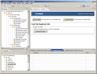
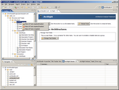
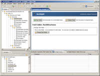
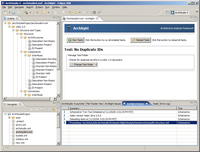
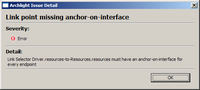
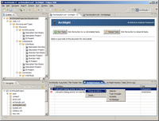

Archlight: An Analysis Framework for ArchStudio
Archlight is a framework of components for integrating architecture
analysis tools into ArchStudio. It provides a unified user
interface for users to select and run tests that
check various properties of architecture descriptions.
This is a screenshot of the Archlight Graphical User Interface:

The Archlight GUI is divided up into four primary areas:
- The Outline View (on the left): Displays a
hierarchically-organized set of tests that can be run on
the current document. The tests that appear in the tree
are provided by the available testing tools. Each test
may be in a different state of enablement, as described below.
- The Editor View: The main, upper-right pane displays
information about the selected test or tests, and provides
buttons to enable and disable these tests.
- The Issues View: The lower-right pane displays
errors detected by tests that have been run.
- The Notices View: Contained on another tab in the
lower-right quadrant of the screen, the Archlight Notices
View displays informational notices generated by Archlight
and its constituent tools.
Archlight Concepts
Within the Archlight framework, many analysis tools coordinate
to provide the user a unified suite of tests that can be run
over architecture documents. These tests are presented
hierarchically, as a tree. Each test has a distinguished
place in the tree; a test's place in the tree is defined
as part of the test itself.
Due to the wide variety
of architectures, architectural styles, and stages of
development, not all documents will be expected to pass
all tests. Therefore, Archlight gives the user the ability
to apply only a subset of all tests to a given document.
Tests can be in one of three states:
Applied Test: This test is applied to the document.
This means that the user expects that the document will pass
this test. This test will run when all tests are run on the
document.
Disabled Test: This test is applied to the document.
This means that the user expects that the document will pass
this test. However, this test is temporarily disabled.
This test will NOT run when all tests are run on the
document, and issues that would be identified by the test will
not be reported until the test is re-enabled.
 Unapplied Test: This test is not applied to the document.
This means that the user does not expect that the document will
pass this test. This test will NOT run when all tests are run on
the document, and issues that would be identified by the test will
not be reported.
Unapplied Test: This test is not applied to the document.
This means that the user does not expect that the document will
pass this test. This test will NOT run when all tests are run on
the document, and issues that would be identified by the test will
not be reported.
The suite of available tests is determined by the installed tools
and the tests that they report they can run. Whether tests
are applied, disabled, or unapplied is a property of each document.
Each document stores a list of applied and disabled tests. If
a document is encountered that references unavailable tests, those
tests will be inserted into the tree as Unknown Tests. Unknown
tests will not run (since they are not available on the system)
but they will remain associated with the document unless they
are unapplied.
Technical Detail of Test Storage
Each test has a unique identifier, called a UID. This is simply
a string that identifies the test. In general, the user of Archlight will
never see these UIDs - these are created and managed by test
developers. A test's UID generally will never change, even if the
test's name, purpose, or location in the tree changes. Each
analysis tool is expected to perform one or more tests. These tests
are referred to by their UIDs. Each document stores a list of test
UIDs and whether they are applied or disabled. If test UIDs are
found in a document but no tool reports that it can perform a test
with that UID, the tests become Unknown Tests in the Archlight GUI.
Running Archlight
To run Archlight, start ArchStudio, and drag and drop an
architecture description from the navigator view to the
Archlight icon in the ArchStudio Launcher.
Archlight will display tests in the
tree on the left. Enable an appropriate
set of tests. Clicking on a test node in the tree will
give you a test options button-menu in the editor pane:

By clicking on one of the options, you can change the state
of the selected test for this document. If the selected tree
node is a folder, you will have the option of setting the states
of all tests contained in the subtree contained in the selected
folder at once. This is useful for enabling or disabling many
tests at one time.
You can also context-click (right-click) on a tree node to
set test options or test group options:

Once you enable some tests, you can tell Archlight to run
tests on all documents, or run tests on a specific document.
Use the toolbar buttons or the buttons in the editor pane to
run tests:

While various tools run tests, they will update their status
in the Archlight notices view:

A progress dialog will show the progress of running tests.
Any issues detected will be displayed in the Archlight Issues
view:

Right-clicking on one of the test results and selecting 'Detail'
will show details about that result:

Right-clicking on one of the issues will also provide menu otpions
to focus one of ArchStudio's editors (like ArchEdit or Archipelago)
on an element related to the test result:

Test Errors
If any of the tools were unable to run the selected tests because
of an error, a test-error notice will appear in the Archlight Notices
view. This does not indicate that an architecture document failed to
pass an applied test - this indicates that a test was unable to run
because of some problem, e.g. a configuration or programming
error.
That's it!
This provides a basic overview of how to interact with Archlight from
a user's perspective. Any questions or comments on this page should
be sent to Eric Dashofy.


{kind=link}
{kind=link}
{kind=link}
{kind=link}
{kind=link}
{kind=link}